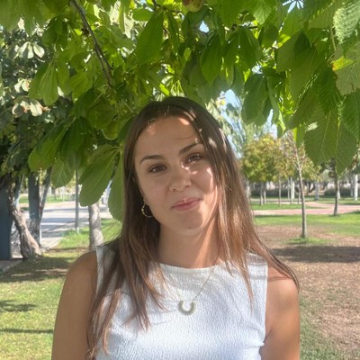
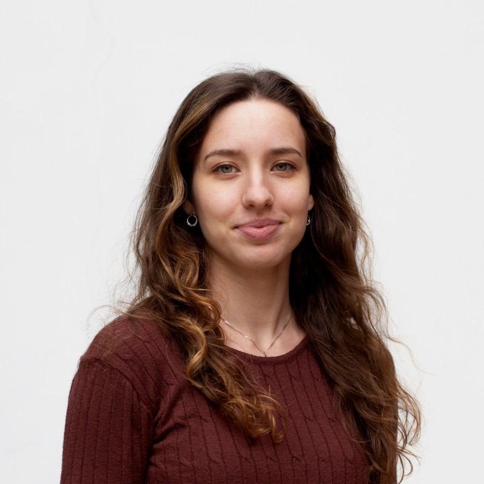
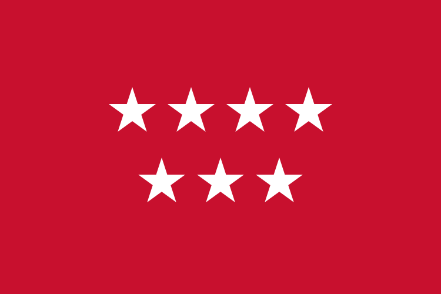

La erosión es visible desde el espacio.
Los datos para estudiarla, aún no.
La erosión no es solo un problema ambiental
Erosion is not just an environmental problem
Por qué la detección de la erosión del suelo necesita datos abiertos
Why Soil Erosion Detection Needs Open Data
La erosión del suelo desgasta progresivamente la tierra fértil de la que dependemos y acelera la degradación del suelo en todo el mundo. La inteligencia artificial puede ayudar a detectar esta erosión mediante imágenes satelitales, pero este avance se ve frenado por un gran problema: la falta de datos abiertos. Tras revisar 113 estudios sobre IA aplicada a la erosión del suelo, notamos que solo 2 poseen datos de acceso abierto, y ambos se limitan a una única región y a un solo tipo de satélite.
SoilSaveR busca cerrar esa brecha: propone un método para construir un dataset de acceso abierto para la detección de la erosión del suelo. El dataset combina imágenes de teledetección de varias fuentes satelitales en distintas regiones con mapas claros que marcan exactamente dónde se produce la erosión.
Cómo funciona SoilSaveR → Detectar la erosión del suelo a partir de imágenes satelitales
El método funciona en dos pasos.
Una serie de modelos científicos que explican cómo el terreno y la lluvia provocan la pérdida de suelo (RUSLE e índices topográficos) señalan automáticamente las zonas de mayor riesgo.
Seres humanos revisan estas zonas en imágenes satelitales Sentinel-2 para confirmar que la erosión es realmente visible y que cada etiqueta tiene su correspondencia física.
How SoilSaveR Works → Detecting Soil Erosion from Satellite Images
integradas
de estudio activas
modelos semi-supervisados
reproducible
Así se ve la erosión desde el espacio
This is what erosion looks like from space
· Patones, Madrid · Compara el mismo territorio en 1956 y 2025.
Cómo los científicos construyen este dataset
How Scientists Build the Dataset
Combinación de modelos científicos con conocimiento de humanos expertos
Revisar a mano cada imagen satelital llevaría años, por eso SoilSaveR usa un proceso de tres pasos: las computadoras hacen el trabajo pesado y las personas hacen la revisión final.
Combining Scientific Models with Human Expertise
- ▸ Paso 1: Estimar la probabilidad de erosión. Una serie de modelos científicos consolidados calculan qué tan vulnerable es cada zona a la pérdida de suelo (a partir del modelo RUSLE y los datos de elevación). El resultado es un mapa de «zonas candidatas».
- ▸ Paso 2: Acotar la búsqueda. Las zonas candidatas se afinan con medidas del propio paisaje, como dónde tiende a acumularse el agua o qué tan empinado es el terreno.
- ▸ Paso 3: Confirmación humana. Un grupo de revisores capacitados examinan solo las zonas candidatas en imágenes satelitales y marcan dónde la erosión es realmente visible.
- ▸ Step 1: Find likelihood of erosion. Established scientific models calculate how vulnerable each area is to soil loss (using the RUSLE model and elevation data). The result is a map of “candidate zones”.
- ▸ Step 2: Narrow down the search. The candidate zones are refined using measures of the landscape itself like where water tends to collect or how steep the ground is.
- ▸ Step 3: Human confirmation. Trained reviewers examine only the candidate zones on satellite images and mark where erosion is actually visible.
Las herramientas de SoilSaveR
The Tools Behind SoilSaveR
- ▸ Imágenes satelitales (Sentinel-2): las imágenes que usan los revisores para marcar la erosión. Cada píxel cubre un área de 10 × 10 metros de terreno, y el satélite capta tipos de luz que el ojo humano no puede ver, lo que ayuda a revelar diferencias en el suelo y la vegetación.
- ▸ Mapas de elevación (ALOS PALSAR): un mapa 3D detallado del terreno. Muestra la forma del paisaje (pendientes, valles y crestas) y alimenta los modelos científicos que predicen dónde es probable la erosión.
- ▸ Imágenes de radar (Sentinel-1, opcional): las imágenes de radar pueden ver a través de las nubes e incluso funcionan de noche. Sumarlas al proyecto le da al dataset una segunda forma de analizar el terreno.
- ▸ Procesamiento en la nube (Google Earth Engine): todos los datos satelitales se consultan y procesan en línea a través de la plataforma de Google, sin necesidad de descargar ni guardar enormes cantidades de imágenes.
- ▸ Satellite images (Sentinel-2): The images reviewers use to mark erosion. Each pixel covers a 10×10 meter patch of ground, and the satellite captures types of light the human eye cannot see, which help reveal differences in soil and vegetation.
- ▸ Elevation maps (ALOS PALSAR): A detailed 3D map of the terrain. It shows the shape of the land (slopes, valleys, and ridges) and feeds the scientific models that predict where erosion is likely.
- ▸ Radar images (Sentinel-1, optional): Radar images can see through clouds and even work at night. Adding it gives the dataset a second way of analyzing the ground.
- ▸ Cloud processing (Google Earth Engine): All the satellite data is accessed and processed online through Google’s platform, so there’s no need to download and store huge amounts of imagery.
El valor de SoilSaveR
Why SoilSaveR matters
- La investigación actual llevada a cabo con IA sobre erosión no se puede verificar ni ampliar. Casi todos los modelos de IA publicados cuyo fin es detectar la erosión del suelo se entrenaron con datos que no son públicos. Sin acceso a esos datos, otros científicos no pueden verificar los resultados ni mejorarlos.
- El método más común predice el riesgo, no la realidad. El enfoque más utilizado, el modelo RUSLE, estima dónde es probable que ocurra la erosión, pero no muestra dónde ocurrió realmente. Además, sus estimaciones pueden estar muy lejos de la realidad: solo el 41% de los estudios contrastan estas predicciones con datos reales.
- La IA necesita ejemplos reales para aprender. Para enseñarle a un modelo de IA a reconocer características de la erosión, hacen falta ejemplos en los que dicha erosión haya sido confirmada visualmente, no solo predicha por una fórmula.
- SoilSaveR cierra esta brecha. Al combinar múltiples fuentes de datos con verificación humana, SoilSaveR ofrece una base abierta para entrenar modelos de IA que detecten erosión en imágenes satelitales. A su vez, permite compararlos de manera justa, con los mismos datos, para que cualquiera pueda reproducir los resultados.
Quién construye SoilSaveR
Who builds SoilSaveR
Reunimos a investigadores de Darwin Geospatial, la Universidad Johns Hopkins y la Universidad Rey Juan Carlos para construir el primer dataset abierto, multimodal y multi-región.


Líder de Investigación
Profesor Ayudante Doctor en la Universidad Rey Juan Carlos y líder de investigación del grupo. Su tesis «Processing and Learning over Irregular Domains» recibió el Premio a la Mejor Tesis Doctoral 2026 del capítulo IEEE Spain Signal Processing and Communications. Investiga procesamiento de señales sobre grafos y aprendizaje automático.

Ingeniero de Datos Geoespaciales
Cofundador e ingeniero geoespacial de Darwin Geospatial. Especialista en SIG, teledetección, análisis espacial y cartografía, convierte los datos espaciales en mapas y herramientas para entender paisajes y sistemas naturales. Ha trabajado con el OAPN en el Parque Nacional de Sierra Nevada.

Investigadora Predoctoral
Científica de datos especializada en aprendizaje automático aplicado a datos ambientales. En su Doctorado Industrial en Darwin desarrolla los modelos de IA de SoilSaveR, construyendo el dataset abierto de erosión del suelo y validándolo con verdad de campo.


Investigador Doctoral
Investigador doctoral (Graduate Fellow) en la Universidad Johns Hopkins y ex oficial de la Armada de la India. Científico de datos ambientales especializado en meteorología, oceanografía, modelización numérica y aprendizaje automático. Formó parte del equipo SoilSentinel en el reto NASA Space-to-Soil.



Javier Velázquez Saornil
Investigador Principal Senior
Investigador Principal Senior en la Universidad Católica de Ávila, especialista en ecología del paisaje, cartografía ambiental y conservación del territorio. Aporta al grupo la perspectiva de análisis espacial, planificación ambiental y áreas protegidas.

1er Premio a Mejor Propuesta de Investigación · Doctorados Industriales, Comunidad de Madrid
1st Research Proposal Award · Industrial Doctorates, Comunidad de Madrid
Mejor propuesta de entre las 116 candidaturas a Doctorado Industrial de la Comunidad de Madrid 2025, en todas las categorías.
Best proposal out of 116 industrial PhD applications to the Comunidad de Madrid 2025 call, across all categories.
Darwin Geospatial + URJC · Septiembre 2026
Darwin Geospatial + URJC · September 2026

2º Premio · NASA Space to Soil Challenge
2nd Award · NASA Space to Soil Challenge
Junio 2026
June 2026
Ver en la web oficial de la NASA →¿Quieres colaborar o usar el dataset?
Want to collaborate or use the dataset?
Buscamos colaboraciones de investigación, anotadores expertos y equipos que quieran entrenar o validar modelos de detección de erosión con datos abiertos.
Contáctanos →